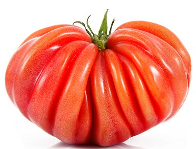

Tomates Cœur de Bœuf
Charnue, juteuse, idéale pour les salades et l'été.
Découvrez nos variétés anciennes et locales.
Charnue, juteuse, idéale pour les salades et l'été.
La variété locale pour l'omelette ou la friture.
Récoltées jeunes pour plus de croquant et de gout.
Goût de châtaigne, parfait pour les soupes en hiver.